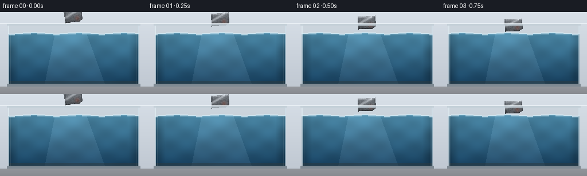
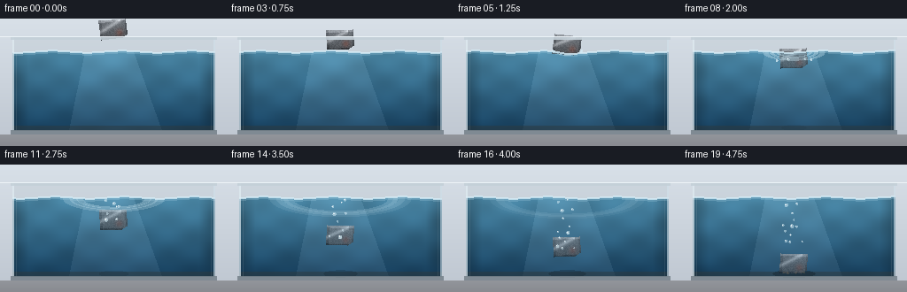
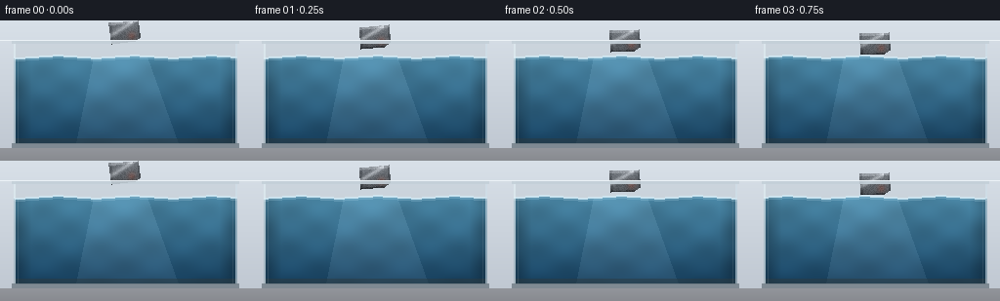

CODING AGENTS AS PIXEL WORLD MODELS
traex/Seed-2.1-Pro-0915 · phygen_006
点击播放 · 原生 RGB 像素
逐轮保存的候选
回放视频、检查图与代码变化。
每份候选均可单独播放。实际图片检查记录在下方工具轨迹中。
候选 01播放与检查图
点击播放 · 原生 RGB 像素

展开代码变化
--- 上一保存版本
+++ 本次保存版本
@@ -0,0 +1,281 @@
+"""Procedural text-to-video renderer.
+
+Scene: a piece of iron is gently placed on the water surface of a glass tank.
+Iron is denser than water, so after a soft touchdown (ripples, tiny droplets
+and bubbles) the chunk slowly sinks toward the tank bottom over 5 seconds.
+
+Pure numpy + PIL geometry/shading, no external assets or engines.
+"""
+import os
+
+import numpy as np
+from PIL import Image, ImageDraw
+
+import artifact_io
+
+W, H, N, FPS = 256, 144, 20, 4.0
+
+# Tank geometry (pixels)
+LX, RX = 14, 242 # inner glass edges
+RIM_Y, BOT_Y = 20, 126 # top rim and tank bottom
+SURF_Y = 37 # calm water surface
+CX = 128 # placement column
+
+# Iron chunk half-extents
+BW, BH = 15.0, 11.0
+
+rng = np.random.default_rng(21)
+
+# ---------------------------------------------------------------------------
+# Animation curves
+# ---------------------------------------------------------------------------
+
+def block_bottom(f):
+ """World y of the chunk's bottom edge at frame f."""
+ air = {0: 18.0, 1: 24.0, 2: 29.5, 3: 34.0}
+ if f < 4:
+ return air[f]
+ if f == 4:
+ return 36.5 # first contact with the surface
+ s = (f - 4) / 15.0
+ # accelerating toward a gentle terminal velocity
+ return 36.5 + 83.5 * s ** 1.12
+
+
+def block_angle(f):
+ """Tilt in degrees: steadied in air, damped wobble while sinking."""
+ if f < 4:
+ return -6.0 * (1.0 - f / 4.0)
+ a = f - 4
+ return 9.0 * np.exp(-a / 8.0) * np.sin(a * 0.85)
+
+
+def surface_y(x, f):
+ """Slightly wavy water surface, with a contact dimple near entry."""
+ t = f * 0.55
+ y = SURF_Y + 1.1 * np.sin(0.08 * x + t)
+ if 4 <= f <= 7:
+ dimple = 2.6 * np.exp(-((x - CX) / 13.0) ** 2) * (1.0 - (f - 4) / 4.0)
+ y += dimple
+ return y
+
+
+# ---------------------------------------------------------------------------
+# Particle systems (deterministic, pre-generated)
+# ---------------------------------------------------------------------------
+
+bubbles = [] # spawn frame, x0, y0, r, rise speed, wobble phase
+for sf in range(5, 17):
+ for _ in range(int(rng.integers(1, 4))):
+ bubbles.append(dict(
+ sf=sf,
+ x0=CX + rng.normal(0, 7),
+ y0=block_bottom(sf) - BH + rng.uniform(-2, 3),
+ r=rng.uniform(1.0, 2.4),
+ vy=rng.uniform(1.3, 2.7),
+ ph=rng.uniform(0, 6.28),
+ ))
+
+droplets = [] # tiny splash droplets at entry
+for sf in (4, 5):
+ for side in (-1, 1):
+ droplets.append(dict(sf=sf, x0=CX + side * 15, side=side,
+ vy=rng.uniform(2.6, 3.4)))
+
+ripples = [dict(sf=sf) for sf in (4, 5, 6)]
+
+
+# ---------------------------------------------------------------------------
+# Drawing helpers (work on float RGB arrays)
+# ---------------------------------------------------------------------------
+
+def poly_mask(points):
+ m = Image.new("L", (W, H), 0)
+ ImageDraw.Draw(m).polygon([(float(x), float(y)) for x, y in points], fill=255)
+ return np.asarray(m, dtype=bool)
+
+
+def ellipse_mask(cx, cy, rx, ry, band=None):
+ yy, xx = np.mgrid[0:H, 0:W]
+ d = np.sqrt(((xx - cx) / max(rx, 0.5)) ** 2 + ((yy - cy) / max(ry, 0.5)) ** 2)
+ if band is None:
+ return d <= 1.0
+ lo, hi = band
+ return (d >= lo) & (d <= hi)
+
+
+def blend(base, mask, color, alpha):
+ """Alpha-composite a flat color over base where mask is true."""
+ a = np.clip(alpha, 0.0, 1.0)
+ if np.isscalar(a) is False:
+ a = a[..., None]
+ for c in range(3):
+ base[..., c] = np.where(mask, base[..., c] * (1 - a) + color[c] * a,
+ base[..., c])
+
+
+# ---------------------------------------------------------------------------
+# Frame renderer
+# ---------------------------------------------------------------------------
+
+def render_frame(f):
+ t = f * 0.55
+ yy, xx = np.mgrid[0:H, 0:W].astype(np.float32)
+ frame = np.zeros((H, W, 3), np.float32)
+
+ # --- backdrop: cool studio wall --------------------------------------
+ wall = np.zeros((H, W, 3), np.float32)
+ g = yy / H
+ wall[..., 0] = 216 - 26 * g
+ wall[..., 1] = 224 - 26 * g
+ wall[..., 2] = 232 - 24 * g
+ frame[:] = wall
+
+ # floor below the tank
+ floor = yy > BOT_Y + 4
+ frame[floor] = (150 - (yy[floor] - BOT_Y) * 0.8)[:, None] * np.array([1.0, 1.02, 1.06])
+
+ # --- tank back panel (slightly darker interior) ----------------------
+ inside = (xx >= LX) & (xx <= RX) & (yy >= RIM_Y) & (yy <= BOT_Y)
+ blend(frame, inside, (188, 200, 208), 0.35)
+
+ # --- water body -------------------------------------------------------
+ surf = surface_y(xx, f)
+ water = inside & (yy > surf)
+ depth = np.clip((yy - SURF_Y) / (BOT_Y - SURF_Y), 0, 1)
+ top_col = np.array([74, 134, 164.0])
+ bot_col = np.array([22, 62, 92.0])
+ water_col = top_col[None, None, :] * (1 - depth[..., None]) + \
+ bot_col[None, None, :] * depth[..., None]
+ # moving caustic shimmer
+ caustic = (1.0
+ + 0.05 * np.sin(0.11 * xx + 0.45 * t) * np.sin(0.16 * yy - 0.3 * t)
+ + 0.03 * np.sin(0.05 * (xx + yy) + 0.2 * t))
+ water_col *= caustic[..., None]
+ # soft light shaft from above
+ shaft = poly_mask([(96, SURF_Y), (150, SURF_Y), (182, BOT_Y), (78, BOT_Y)])
+ water_col[shaft] += 14.0
+ # interior vignette near glass walls
+ edge = np.clip((np.minimum(xx - LX, RX - xx) - 4) / 14.0, 0, 1)
+ water_col *= (0.82 + 0.18 * edge)[..., None]
+ frame[water] = water_col[water]
+
+ # sediment band on the tank floor
+ sed = water & (yy > BOT_Y - 6)
+ blend(frame, sed, (46, 58, 62), 0.5)
+
+ # --- contact shadow on the floor -------------------------------------
+ yb = block_bottom(f)
+ prox = np.clip((yb - 40) / (BOT_Y - 44), 0, 1)
+ sh = ellipse_mask(CX, BOT_Y - 3, 12 + 12 * prox, 3.2 + 1.5 * prox)
+ blend(frame, sh, (8, 16, 22), 0.30 * prox)
+
+ # --- iron chunk -------------------------------------------------------
+ cy = yb - BH
+ ang = np.deg2rad(block_angle(f))
+ ca, sa = np.cos(ang), np.sin(ang)
+ # chipped silhouette: clipped lower-right corner reads as a rough chunk
+ local_pts = [(-BW, -BH), (BW, -BH), (BW, BH - 4),
+ (BW - 6, BH), (-BW, BH)]
+ world_pts = [(CX + lx * ca - ly * sa, cy + lx * sa + ly * ca)
+ for lx, ly in local_pts]
+ mask = poly_mask(world_pts)
+
+ lx = (xx - CX) * ca + (yy - cy) * sa
+ ly = -(xx - CX) * sa + (yy - cy) * ca
+ shade = np.clip(0.92 - ly * 0.018, 0.55, 1.18) # vertical metal gradient
+ iron = np.empty((H, W, 3), np.float32)
+ iron[:] = np.array([104.0, 109.0, 115.0])
+ iron *= shade[..., None]
+ iron = np.where((ly < -BH + 2)[..., None], iron + 34, iron) # top bevel
+ iron = np.where((ly > BH - 2)[..., None], iron - 26, iron) # bottom edge
+ iron = np.where((np.abs(lx) > BW - 2)[..., None], iron - 18, iron)
+ # specular streak
+ spec = np.exp(-((lx * 0.5 + ly + 6.0) / 2.4) ** 2) * (lx < 9)
+ iron += (spec * 60)[..., None]
+ # mottled cast-iron speckle
+ hsh = np.mod(np.sin(lx * 12.9898 + ly * 78.233) * 43758.5453, 1.0) - 0.5
+ iron += (hsh * 22)[..., None]
+ # small rust patch
+ rust = np.exp(-(((lx - 6) ** 2 + (ly - 4) ** 2) / 16.0))
+ iron += (rust[..., None] * np.array([22.0, -8.0, -16.0]))
+ frame[mask] = iron[mask]
+
+ # submerged portion picks up the water tint
+ under = mask & (yy > surf)
+ frame[under] = frame[under] * 0.74 + water_col[under] * 0.26
+
+ # --- bubbles rising from the sinking chunk ---------------------------
+ for b in bubbles:
+ age = f - b["sf"]
+ if age < 0:
+ continue
+ by = b["y0"] - b["vy"] * age
+ if by < SURF_Y + 2:
+ continue
+ bx = b["x0"] + np.sin(age * 0.8 + b["ph"]) * 1.6
+ m = ellipse_mask(bx, by, b["r"], b["r"]) & water
+ blend(frame, m, (206, 230, 240), 0.55)
+ hl = ellipse_mask(bx - b["r"] * 0.3, by - b["r"] * 0.3,
+ b["r"] * 0.35, b["r"] * 0.35)
+ blend(frame, hl, (255, 255, 255), 0.8)
+
+ # --- entry droplets ---------------------------------------------------
+ for d in droplets:
+ age = f - d["sf"]
+ if age < 0 or age > 3:
+ continue
+ dy = -d["vy"] * age + 2.1 * age ** 2
+ dx = d["side"] * 1.4 * age
+ m = ellipse_mask(d["x0"] + dx, SURF_Y + dy, 1.3, 1.6)
+ blend(frame, m, (210, 232, 242), 0.8)
+
+ # --- expanding ripple rings ------------------------------------------
+ for r in ripples:
+ age = f - r["sf"]
+ if age < 0:
+ continue
+ radius = 5 + age * 7.5
+ alpha = max(0.0, 0.55 - age * 0.045)
+ if alpha <= 0:
+ continue
+ ring = ellipse_mask(CX, SURF_Y + 1, radius, max(1.6, radius * 0.26),
+ band=(0.82, 1.0)) & water
+ blend(frame, ring, (200, 228, 240), alpha)
+
+ # --- water surface highlight -----------------------------------------
+ surf_line = (np.abs(yy - surf) < 1.0) & inside
+ blend(frame, surf_line, (214, 236, 246), 0.85)
+ surf_glow = (yy > surf) & (yy < surf + 3) & inside
+ blend(frame, surf_glow, (170, 210, 228), 0.25)
+
+ # --- glass walls, rims and reflections -------------------------------
+ for x in (LX, LX + 1):
+ blend(frame, (xx == x) & (yy >= RIM_Y) & (yy <= BOT_Y),
+ (226, 238, 244), 0.7)
+ for x in (RX - 1, RX):
+ blend(frame, (xx == x) & (yy >= RIM_Y) & (yy <= BOT_Y),
+ (210, 226, 236), 0.6)
+ blend(frame, (xx == LX + 4) & water, (255, 255, 255), 0.10)
+ blend(frame, (xx == RX - 4) & water, (255, 255, 255), 0.08)
+ rim = (yy >= RIM_Y) & (yy <= RIM_Y + 3) & (xx >= LX - 2) & (xx <= RX + 2)
+ blend(frame, rim, (196, 208, 216), 0.9)
+ blend(frame, yy == RIM_Y, (240, 246, 250), 0.9)
+ base = (yy >= BOT_Y) & (yy <= BOT_Y + 4) & (xx >= LX - 2) & (xx <= RX + 2)
+ blend(frame, base, (120, 132, 140), 0.9)
+
+ return np.clip(frame, 0, 255).astype(np.uint8)
+
+
+def main():
+ frames = np.stack([render_frame(f) for f in range(N)], axis=0)
+ case_dir = os.path.dirname(os.path.abspath(__file__))
+ artifact_io.save(frames, case_dir)
+ print(f"saved {frames.shape} to {case_dir}")
+ for f in range(N):
+ print(f"frame {f:02d}: bottom_y={block_bottom(f):6.2f} "
+ f"angle={block_angle(f):6.2f} mean_rgb={frames[f].mean(axis=(0,1)).round(1)}")
+
+
+if __name__ == "__main__":
+ main()
候选 02播放与检查图
点击播放 · 原生 RGB 像素


展开代码变化
--- 上一保存版本
+++ 本次保存版本
@@ -32,14 +32,14 @@
def block_bottom(f):
"""World y of the chunk's bottom edge at frame f."""
- air = {0: 18.0, 1: 24.0, 2: 29.5, 3: 34.0}
+ air = {0: 23.0, 1: 28.0, 2: 32.0, 3: 35.0}
if f < 4:
return air[f]
if f == 4:
return 36.5 # first contact with the surface
s = (f - 4) / 15.0
# accelerating toward a gentle terminal velocity
- return 36.5 + 83.5 * s ** 1.12
+ return 36.5 + 86.5 * s ** 1.12
def block_angle(f):
@@ -83,6 +83,14 @@
vy=rng.uniform(2.6, 3.4)))
ripples = [dict(sf=sf) for sf in (4, 5, 6)]
+
+# faint sediment motes kicked up when the chunk nears the floor
+puff = []
+for k in range(7):
+ puff.append(dict(x0=CX + rng.uniform(-13, 13),
+ y0=BOT_Y - 4 + rng.uniform(-1, 1),
+ vx=rng.uniform(-1.4, 1.4), vy=rng.uniform(0.4, 1.1),
+ r=rng.uniform(0.8, 1.6)))
# ---------------------------------------------------------------------------
@@ -230,6 +238,15 @@
m = ellipse_mask(d["x0"] + dx, SURF_Y + dy, 1.3, 1.6)
blend(frame, m, (210, 232, 242), 0.8)
+ # --- sediment puff on landing ----------------------------------------
+ if f >= 18:
+ age = f - 18
+ for p in puff:
+ px = p["x0"] + p["vx"] * age
+ py = p["y0"] - p["vy"] * age
+ m = ellipse_mask(px, py, p["r"], p["r"]) & water
+ blend(frame, m, (120, 104, 84), 0.45 - 0.15 * age)
+
# --- expanding ripple rings ------------------------------------------
for r in ripples:
age = f - r["sf"]
可观测工具轨迹
实际执行的命令与返回图片。
命令 1exit 0
/bin/bash -lc 'cat prompt.txt; echo "---"; cat GENERATION_RULES.md; echo "---"; cat task_spec.json; echo "---"; ls -la'
命令 2exit 0
/bin/bash -lc 'cat artifact_io.py; echo "---"; ls .agents .codex 2>/dev/null; python3 -c "import numpy, PIL; print(numpy.__version__, PIL.__version__)"'
命令 3exit 0
/bin/bash -lc 'cd "$(pwd)" && python3 generate.py'
命令 4exit 0
/bin/bash -lc 'python3 generate.py && ls -la && ls frames | head -25'
保存候选 2 份；完成命令 4 次；可验证图片返回 0 张。原始 API 响应与完整日志保留在本地。